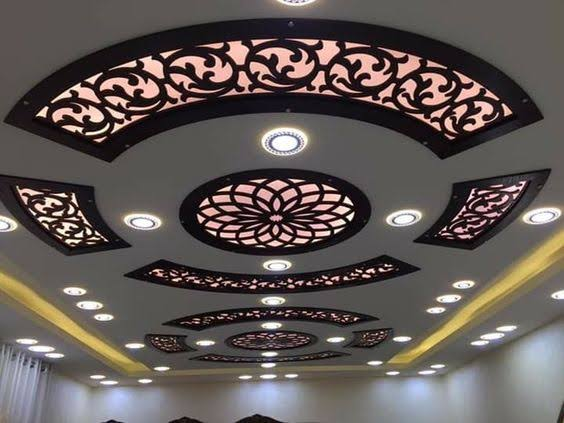

سقف معلق
اساسيات السقف المعلق
تعتبر الأسقف المعلقة أو ما تسمي في بعض الأحيان بالأسقف المستعارة مثالا رائعا للهندسة المعمارية في الوقت الحالي وأسلوب جديد في عالم التشطيبات حيث ظهر كثيرا في الآونة الأخيرة في وقتنا العصري، وغالبا ما تعرف باسم الأسقف المستعارة وهو سقف يتم تعليقه غلي مسافة من السقف الأساسي للمنزل، ويعتبر جزء مهم من أجزاء الديكور الداخلي في المنازل
من أهم مميزات الأسقف المعلقة هو حماية السقف الأساسي من التلف حيث بعزل الحرارة انه يعمل على منع وصول البخار للسقف الأساسي، أيضا يقوم والصوت ويساعد في إنارة الفراغات ولا سيما انه يتحكم في وصول الصوت للأشخاص بشكل جيد الأسقف المعلقة وبعد أن عرفنا أهمية المنزل، فلابد أن نتطلع على أنواع في الأسقف المعلقة والمنتشرة كثيرا في تصميم الديكور الداخلي

أولا: أنواع الأسقف المعلقة
أسقف خشبية
نظرا للنمط العصري والجذاب التي تضيفه في المنزل ويفضل الكثير من أصحاب المنازل الحديثة استخدام الاسقف الخشبية واهم ما يميزها أنها يمكن معالجتها بسهولة حتى يطيل عمرها
أسقف معلقه معدنية
عنصر متين وقوي للديكور المنزلي حيث يضيف لمسه جاذبية خاصة ومتطورة في التصميمات الداخلية، وتتوفر الأسقف على
شكل بلاطات السقف وشكل الألواح
يستخدم السقف المعدني كثيرا في أماكن العمل لتميزها لمقاومة الحريق، وغير قابلة للتشقق أو التشوه مع مرور الوقت حيث تظل محتفظة بشكلها دائما وبالرغم من كل ذلك إلا أن عيبه الوحيد هي التكلفة العالية للمواد المعدنية الخاصة به
أسقف جبسية
النوع الأكثر استخداما في الأسقف المعلقة، يضيف لمسة ناعمة ويمكن تشكيله باي شكل واي تصميم نريده، ومن تصميماته الكرانيش و سرر الجبس أيضا يمكن طلاء سطح السقف علي حسب الوان الخاصة بالمنزل
أسقف بلاستيكية
وتتميز الأسقف بالمادة المصنوعة منه وهى PVC المعروفة بخفة وزنها ومقاومة للرطوبة
وتمتاز بانها غير مكلفة في صناعتها كذلك معروفة بقوتها المتينة، لا تتأثر بالوقت إلا قليلا وقليل ما تحتاج الى الصيانة
أسقف معلقة من القماش أو النسيج
تركيبه سريع لا يتطلب مهارات كبيرة يستخدم في الأماكن الراقية مثل صالات الحفلات وقاعات المناسبات لا يستخدم كثيرا في المنزل له عيوب وهي أن القماش قد يتراكم عليها الأتربة وتكوين بقع بسهولة
أسقف معلقة من الألياف المعدنية
ويستخدم هذا النوع بلاط معدني من السيراميك المقوى بالحجر الطبيعي والخشب وبعض من العناصر الأخرى والتي تزيد من قدرته في العزل للمنتج نهائي
نوع ممتاز في الاستخدام في الأماكن التي تتطلب عزل الصوت و الحرارة ولكن معرض بشكل كبير للتلف الناتج عن المياة أيضا لا يمكن استخدامها في المنازل في الغالب بسبب قله لمعانه وجاذبيته للديكور والتصميم الداخلى للمنازل
أسقف معلقة من الزجاج
يمكن استخدامه في أماكن المطاعم والمكتبات سقف يسمح للأشخاص للرؤية الكاملة للمكان بدون عوائق قابل للتلوين أو النقش عليه وهذه لفته جميلة لإنشاء نقطة مثيرة للرؤية
والاهتمام
عيوبه يجب التعامل مع الواح الزجاج بحذر حيث انه لا يمكن تثبيته بسهولة يتطلب متخصصين في تركيبه بشكل جيد
كذلك يظهر الغبار والأتربة بسهولة على الزجاج لذا من المهم تنظيفه باستمرار
أسقف معلقة بواسطة الشبك المدد
ويستخدم في الديكورات الهندية وهو عبارة عن أسلاك معدنية متداخلة مع بعضها البعض حتى يظهر لنا في النهاية شكل هندسي معين، يتم شراء السقف على هيئة رولات يتراوح عرضها ما بين 100 سم وطولها 10 متر أو تأتى على شكل الواح بأبعاد 1 متر * 2 متر
والان بعد أن تقوم باختيار نوع السقف الذي تريده، فلابد أن تعلم الطرق لتركيب الأسقف المعلقة وأيضا الأدوات التي سيتم استخدامها
ثانيا : الأدوات المستخدمة في تركيب الأسقف المعلقة
الأدوات الأساسية التي يجب توافرها :
شنيور
سلم
مسامير
خامات السقف المعلق ومستلزماته
فيشر
خيط شاغول
سلك تيش
وهناك أدوات أخرى تستخدم فقط مع أنواع معينة من الأسقف سيتم التحدث عنها في طرق تركيب أنواع الأسقف المعلقة
ثالثا: طرق تركيب الأسقف المعلقة
تركيب الأسقف المعلقة الخشبية
في البداية، يتم رفع مقاسات الأسقف طولا وعرضا، ويتم تحديد اماكن الاضاءة ومستوى السقف المعلق
بعد أن تتم عملية تحديد المقاسات والمكان الذي سيتم وضع فيه السقف، يتم وضع نقطتين أفقيتين على السقف باستخدام جهاز يسمي جهاز الشيرب أو جهاز الخرطوم المائي اليدوي
يتم شد خيط بين النقطتين لعمل أثر أفقي وتتم هذه الخطوة على طول السقف حتى يتم تركيب السقف في مستوى واحد، ويمكن استخدام جهاز الشيرب بالليزر فهو سيغنيك ويسهل عليك أكثر من استخدام الخيط
تثبيت إطار خشبي على السقف باستخدام المثقب الكهربائي وحدد أماكن القطع الحديدية الخاصة بتثبيت السقف ومن ثم نقوم بتركيبها على الحائط
وضع القطاعات الرئيسية على برواز السقف المعلق المثبت في الحائط ثم بعد ذلك نضع القطاعات الثانوية
في النهاية، تركيب البلاطات الخشبية ثم بعد ذلك تركيب وتوزيع أجهزة الإضاءة على الثقوب المخصصة لها
تركيب الأسقف المعلقة الجبسية
استخدام خيط الشاغول على الأسطح لتحديد المكان التي سيتم وضع به السقف
يتم شد الخيط حتى يرتطم بالحائط تاركا علامة وذلك لكي يتم تحديد مكان وضع سلك التعليق
يتم عمل ثقب باستخدام مسامير الفيشر وقم بعمل فتحة في الأماكن التي حددتها، وتأكد من أن الفيشر يستطيع التحمل حيث انه سيتم وضع عليه ثقل السقف المعلق ولابد ألا نغفل أن نثبت الزوايا الخاصة بالارتكاز على الجدار
بعد أن قمنا بتثبيت الفيشر، قم بوضع السلك الذي سيقوم بمسك السقف المعلق بكل زواياه واربطه بطريقه سليمة
تجهيز مسامير الزوايا التي ستقوم بتعليق الفيشر بها، وقم بإعادة القياس وحذف أي زيادات موجودة حتى تكون الأجزاء مناسبه في الأطوال وموصلة ببعضها البعض
بعد الانتهاء من الخطوة السابقة، احصل على زوايا MAIN T وهي زوايا الارتكاز الخاصة بالطول الرئيسي
بعد تركيب زوايا الارتكاز، يكون الأمر بعد ذلك سهلا حتى تمد الزوايا الخاصة بالعرض والتي تسمي secondary T
وبهذا الشكل ستحصل على شبكة من زوايا الطول والعرض والتي تكون على هيئة شبكة مكونة من مربعات، كل مربع يساوى حجم لوح الجبس
وفي هذه المرحلة والتي تعتبر الخطوة الأخيرة، يمكنك وضع الألواح الجبسية وتكون قد حصلت على سقف معلق من الجبس رائع
تركيب الأسقف المعلقة المعدنية
وطرق تركيبها تشبه طرق تركيب الأسقف الجبسية، مع اختلاف في الخامات حيث أن في الأسقف المعدنية يتم استخدام بلاطات من المعدن مع قضبان من الألومنيوم
وخلاصة القول الأسقف المعلقة تزيد من مظهر الديكور الداخلي جمالا وأناقة كذلك تضفي أثر رائع في الأماكن سوا المنزل أو أماكن العمل أو حتى مراكز التسوق الكبيرة . وقد عرضنا اليك أنواع الأسقف وأفضل وأكثر الأنواع استخداما، إذا الاختيار لك حسب ذوقك أن تختار النوع المناسب لك وللمكان الذي تريد أن تصمم فيه السقف المعلق